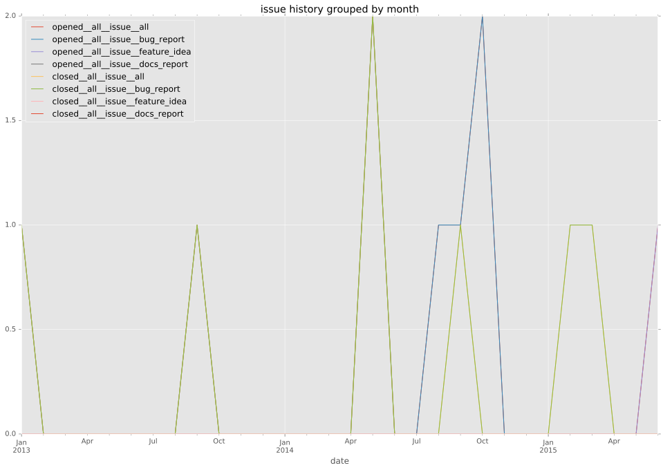
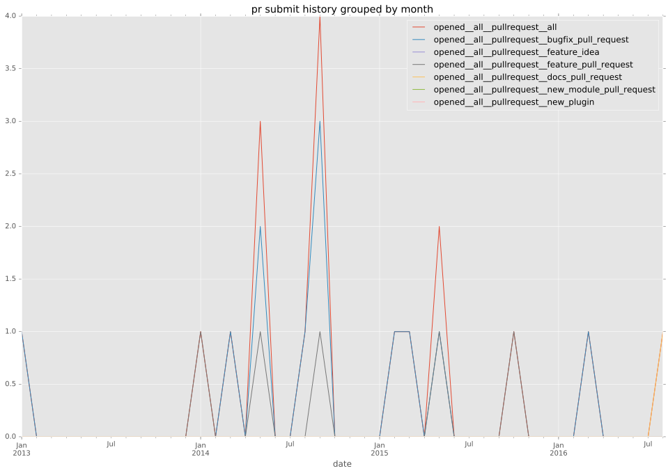
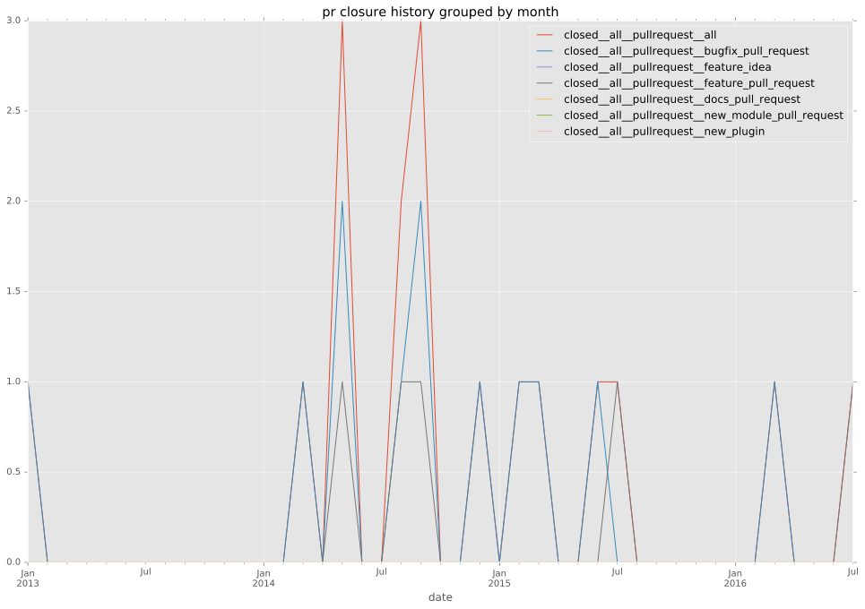
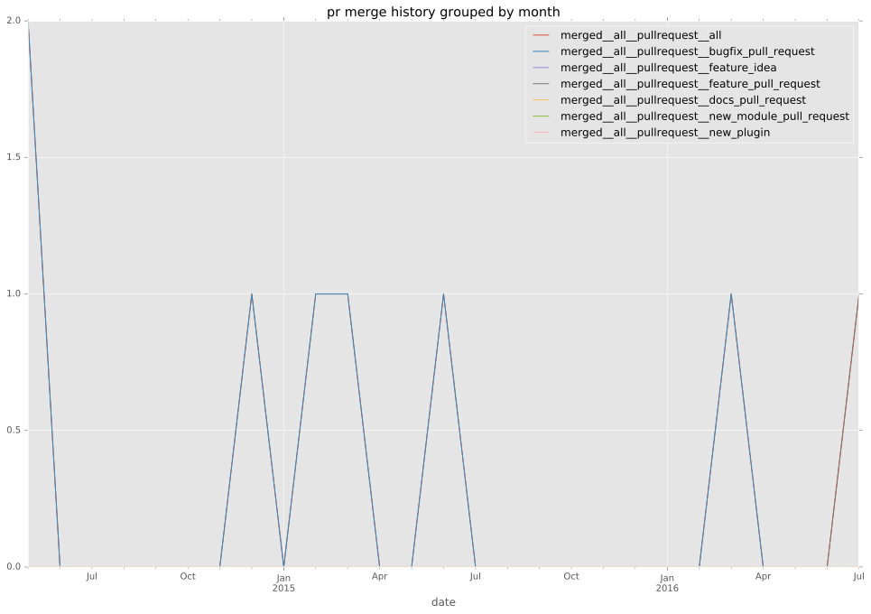

authors
maintainers
- DavidWittman
- mulby
contributors
- mulby : 17 commits
- DavidWittman : 11 commits
- zlalanne : 5 commits
- mpdehaan : 2 commits
- cthiemann : 2 commits
- chris-l-weber : 2 commits
- abompard : 2 commits
- resmo : 1 commits
- mscherer : 1 commits
- gregdek : 1 commits
- bcoca : 1 commits
total issue counts
bugfix pull request: 11
pullrequest: 17
docs pull request: 1
feature pull request: 5
feature idea: 1
issue: 9
bug report: 8
issue history

pullrequest history



days open by issue type
feature pull request
count: 6
std: 122.057363563
min: 7
max: 254
median: 145.5
mean: 136.0
all
count: 33
std: 97.2768133169
min: 0
max: 385
median: 1.0
mean: 52.1818181818
pullrequest
count: 0
std: nan
min: nan
max: nan
median: nan
mean: nan
docs pull request
count: 0
std: nan
min: nan
max: nan
median: nan
mean: nan
bugfix pull request
count: 18
std: 19.6924888637
min: 0
max: 62
median: 0.0
mean: 9.16666666667
feature idea
count: 1
std: nan
min: 385
max: 385
median: 385.0
mean: 385.0
issue
count: 0
std: nan
min: nan
max: nan
median: nan
mean: nan
bug report
count: 8
std: 70.7389567353
min: 0
max: 177
median: 0.5
mean: 44.5
closures grouped by total days open